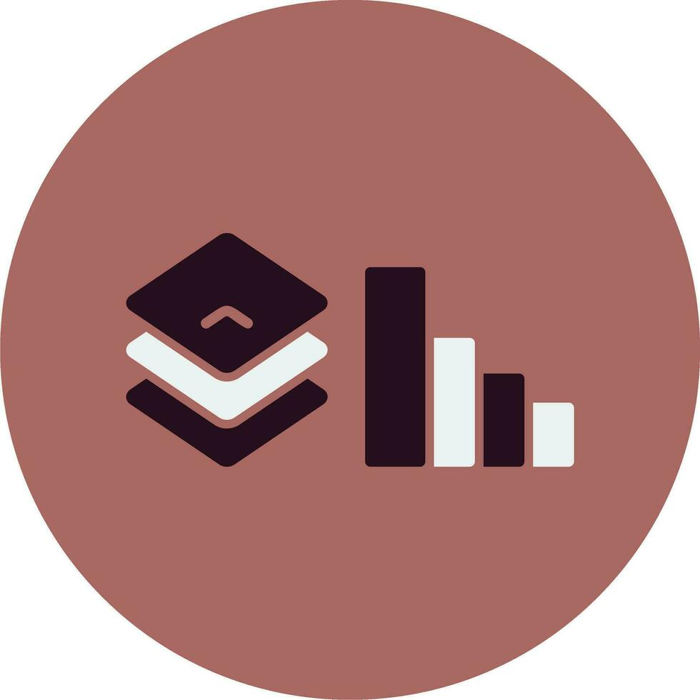
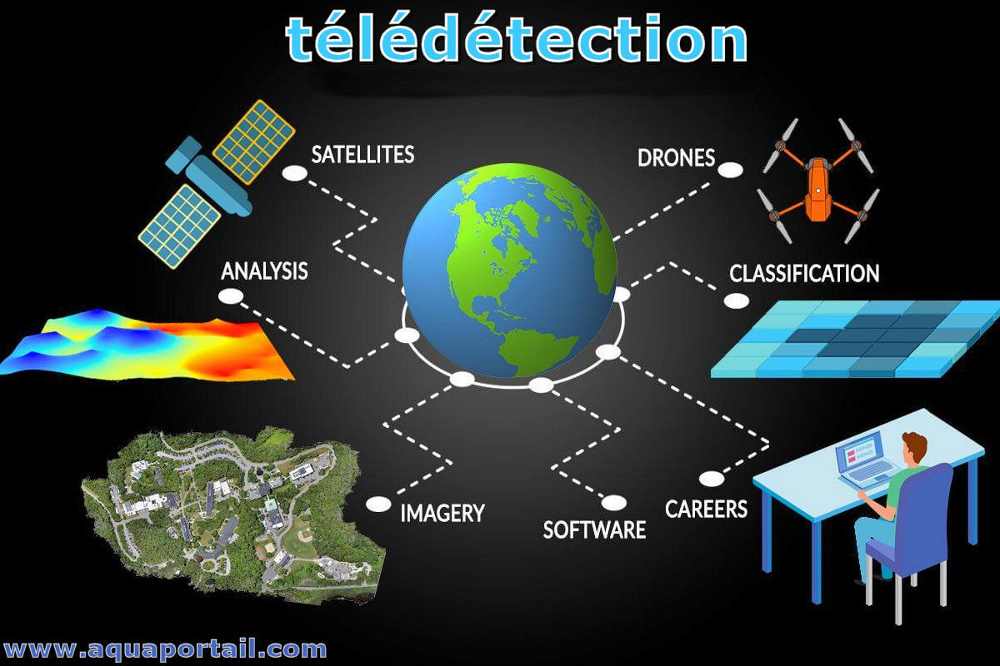

Mes compétences
Des outils et méthodes au service de l'analyse spatiale et environnementale.
SIG, Webmapping & Gestion de Données
Administration de données territoriales (cadastre, réseaux, PLU), cartographie thématique et développement d'applications web interactives.
Conception de cartes thématiques opérationnelles et interfaces de visualisation spatiale. Structuration des données (formats, SRS) et diffusion via outils webmapping pour des usages terrain et décisionnels.

Analyse spatiale, Bases de Données & SQL
Bases de données spatiales (PostGIS/SQL), analyses multicritères et statistiques spatiales pour produire des diagnostics territoriaux d'aide à la décision.
Mobilisation de l'analyse multicritère, de la modélisation RUSLE, des statistiques spatiales et de la lecture croisée de phénomènes (érosion, occupation des sols, risques climatiques). Hypothèses et limites méthodologiques documentées.

Télédétection & Séries temporelles
Images satellites optiques et radar, séries temporelles, indices spectraux pour l'analyse des dynamiques environnementales.
Traitement de séries temporelles Sentinel-1 (SAR) et Sentinel-2 (optique) : prétraitements sous SNAP, calcul d'indices (NDVI, NDWI, BSI), détection de changements, suivi phénologique et classification d'occupation du sol.

Programmation & Machine Learning
Scripts et pipelines Python/R pour automatiser les géotraitements et modéliser les dynamiques spatiales par apprentissage automatique.
Classification supervisée (Random Forest, XGBoost) pour détecter le travail du sol, cartographier l'occupation des terres et évaluer les risques. Chaînes de traitement reproductibles et documentées.